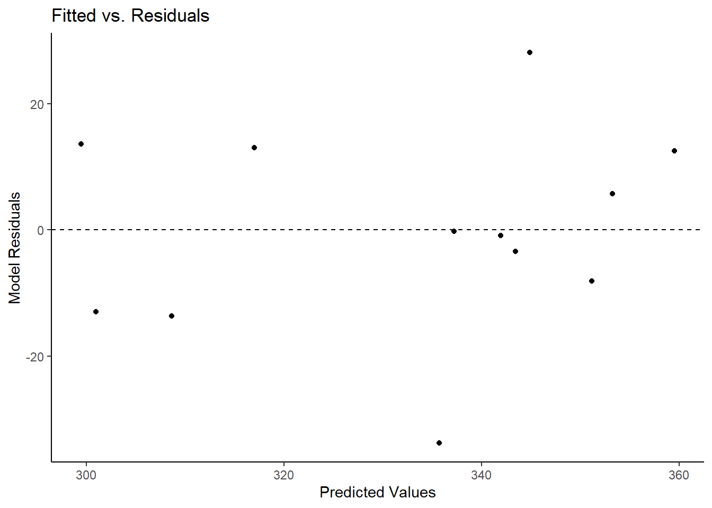

Mixed-Effect Models
Multilevel model: two levels
The eggprod data in the faraway package contains data on
egg production. (Faraway 2016) Six pullets
(young hens) were placed into each of 12 pens. Four blocks were formed
from groups of 3 pens based on location. Three treatments were applied.
The number of eggs produced was recorded. Start by visualizing the
distribution of eggs produced split by blocks and treatment.
library(faraway)
data("eggprod")
library(ggplot2)
# Plotting eggs ~ treat
ggplot(eggprod, aes(x=treat, y=eggs, color = treat)) + # Plotting eggs~treat, color by treat
geom_jitter(position=position_jitter(0.2)) + # Creating a jitter plot, staggering groups
coord_flip() + # Flipping x and y coordinates to mimic Base R plotting
theme_classic() # Using classic theme
# Plotting eggs ~ block
ggplot(eggprod, aes(x=block, y=eggs, color = block)) + # Plotting eggs~treat, color by treat
geom_jitter(position=position_jitter(0.2)) + # Creating a jitter plot, staggering groups
coord_flip() + # Flipping x and y coordinates to mimic Base R plotting
theme_classic() # Using classic theme
This shows visually that treatment O may have produced fewer eggs than treatment F or E whose distributions are more similar and closer to one another. The distributions of eggs produced by each block seem to overlap and are very similar to one another.
Now, we model the number of eggs produced with treat as
a fixed effect and block as a random effect. (Faraway 2006) Does treat appear to
affect the number of eggs, and if so, which treatment seems
superior?
library(lme4)
m <- lmer(eggs ~ treat + (1|block), data = eggprod)
summary(m)## Linear mixed model fit by REML ['lmerMod']
## Formula: eggs ~ treat + (1 | block)
## Data: eggprod
##
## REML criterion at convergence: 85.4
##
## Scaled residuals:
## Min 1Q Median 3Q Max
## -1.71233 -0.47453 -0.02845 0.64196 1.42942
##
## Random effects:
## Groups Name Variance Std.Dev.
## block (Intercept) 129.9 11.40
## Residual 386.9 19.67
## Number of obs: 12, groups: block, 4
##
## Fixed effects:
## Estimate Std. Error t value
## (Intercept) 349.00 11.37 30.702
## treatF -6.25 13.91 -0.449
## treatO -42.50 13.91 -3.056
##
## Correlation of Fixed Effects:
## (Intr) treatF
## treatF -0.612
## treatO -0.612 0.500library(performance)
icc(m)## # Intraclass Correlation Coefficient
##
## Adjusted ICC: 0.251
## Unadjusted ICC: 0.144VarCorr(m)## Groups Name Std.Dev.
## block (Intercept) 11.399
## Residual 19.670The likeness of egg production in the same block is .25. The variation around the intercept is 11.40 across blocks. The intercept fixed effect is the grand mean of eggs across the entire sample when treat = “E”. The treatF and treatO fixed effects can be interpreted as the difference in means (e.g., treatE - treatF). Therefore, treatF produces 6.25 less mean egg production and treatO produces 42.50 less mean egg production.
This is further substantiated by looking at the means by treatment. Observed means of eggs by treat:
tapply(eggprod$eggs, eggprod$treat, mean)## E F O
## 349.00 342.75 306.50Pairwise comparisons, adjusted p-values and confidence intervals:
library(emmeans)
emmeans(m, pairwise ~ treat)## $emmeans
## treat emmean SE df lower.CL upper.CL
## E 349 11.4 7.99 323 375
## F 343 11.4 7.99 317 369
## O 306 11.4 7.99 280 333
##
## Degrees-of-freedom method: kenward-roger
## Confidence level used: 0.95
##
## $contrasts
## contrast estimate SE df t.ratio p.value
## E - F 6.25 13.9 6 0.449 0.8965
## E - O 42.50 13.9 6 3.056 0.0508
## F - O 36.25 13.9 6 2.606 0.0892
##
## Degrees-of-freedom method: kenward-roger
## P value adjustment: tukey method for comparing a family of 3 estimatesemmeans(m, pairwise ~ treat) |> confint()## $emmeans
## treat emmean SE df lower.CL upper.CL
## E 349 11.4 7.99 323 375
## F 343 11.4 7.99 317 369
## O 306 11.4 7.99 280 333
##
## Degrees-of-freedom method: kenward-roger
## Confidence level used: 0.95
##
## $contrasts
## contrast estimate SE df lower.CL upper.CL
## E - F 6.25 13.9 6 -36.426 48.9
## E - O 42.50 13.9 6 -0.176 85.2
## F - O 36.25 13.9 6 -6.426 78.9
##
## Degrees-of-freedom method: kenward-roger
## Confidence level used: 0.95
## Conf-level adjustment: tukey method for comparing a family of 3 estimatesAn effect plot:
library(ggeffects)
ggpredict(m, terms = ~ treat) |> plot(add.data = TRUE)
We can now assess model fit and significance of predictors.
car::Anova(m)## Analysis of Deviance Table (Type II Wald chisquare tests)
##
## Response: eggs
## Chisq Df Pr(>Chisq)
## treat 10.887 2 0.004324 **
## ---
## Signif. codes: 0 '***' 0.001 '**' 0.01 '*' 0.05 '.' 0.1 ' ' 1library(lmerTest)
summary(m)## Linear mixed model fit by REML ['lmerMod']
## Formula: eggs ~ treat + (1 | block)
## Data: eggprod
##
## REML criterion at convergence: 85.4
##
## Scaled residuals:
## Min 1Q Median 3Q Max
## -1.71233 -0.47453 -0.02845 0.64196 1.42942
##
## Random effects:
## Groups Name Variance Std.Dev.
## block (Intercept) 129.9 11.40
## Residual 386.9 19.67
## Number of obs: 12, groups: block, 4
##
## Fixed effects:
## Estimate Std. Error t value
## (Intercept) 349.00 11.37 30.702
## treatF -6.25 13.91 -0.449
## treatO -42.50 13.91 -3.056
##
## Correlation of Fixed Effects:
## (Intr) treatF
## treatF -0.612
## treatO -0.612 0.500Running a \(\chi^2\) test on the
model, we see that the model including treat is a better fit (\(\chi^2(2,N = 12) = 10.887, p < .01\))
than the null model (intercept only). By loading the
lmerTest package, we can see in the summary that
specifically, treatment O is significant less than treatment E.
# normality of residuals; looks good
lattice::qqmath(m)
# constant variance; one pretty big residual (model predicts about 335 but the observed value is closer to 300)
plot(m)
# constant variance within treatment levels; TreatF has a lot more variability
plot(m, treat ~ resid(.))
Repeated-Measures model
The book Linear Mixed Models presents a study on rat brains (West, Welch, and Galecki 2015). In this study, five rats had three regions of their brains measured for “activation” after two different treatments. Since all rats received both treatments and had the same three regions measured both times, this is a repeated-measures analysis. Of interest is how the numeric dependent variable, activate, changes based on treatment and brain region.
The data is available in the file “rat_brain.dat”. We can import this
file using the read.table() function. We set
header = TRUE because the first row of the data contains
column headers.
rats <- read.table("data/rat_brain.dat", header = TRUE)The animal column contains the id for each rat. Below we use the
head() function to view the first six rows of data. Notice
the first rat, R111097, has one measure for each combination of
treatment and region. This is why we refer to this as repeated-measures
data.
head(rats)## animal treatment region activate
## 1 R111097 1 1 366.19
## 2 R111097 1 2 199.31
## 3 R111097 1 3 187.11
## 4 R111097 2 1 371.71
## 5 R111097 2 2 302.02
## 6 R111097 2 3 449.70Longitudinal model
The phosphate data in the HSAUR3 package contains plasma
inorganic phosphate levels from 33 subjects (20 controls, 13 obese).
(Hothorn and Everitt 2022)
library(HSAUR3)
data("phosphate")
head(phosphate)## group t0 t0.5 t1 t1.5 t2 t3 t4 t5
## 1 control 4.3 3.3 3.0 2.6 2.2 2.5 3.4 4.4
## 2 control 3.7 2.6 2.6 1.9 2.9 3.2 3.1 3.9
## 3 control 4.0 4.1 3.1 2.3 2.9 3.1 3.9 4.0
## 4 control 3.6 3.0 2.2 2.8 2.9 3.9 3.8 4.0
## 5 control 4.1 3.8 2.1 3.0 3.6 3.4 3.6 3.7
## 6 control 3.8 2.2 2.0 2.6 3.8 3.6 3.0 3.5Reshaping the data facilitates data visualization. The
pivot_longer() function from the tidyr package makes quick
work of this. (Wickham and Girlich 2022)
We add a subject id to identify subjects after reshaping
the data into a “long” format.
library(tidyr)
phosphate$id <- 1:nrow(phosphate)
phosphateL <- pivot_longer(phosphate, cols = t0:t5,
names_to = "time",
names_prefix = "t",
names_transform = list(time = as.numeric),
values_to = "level")
head(phosphateL, n = 10)## # A tibble: 10 × 4
## group id time level
## <fct> <int> <dbl> <dbl>
## 1 control 1 0 4.3
## 2 control 1 0.5 3.3
## 3 control 1 1 3
## 4 control 1 1.5 2.6
## 5 control 1 2 2.2
## 6 control 1 3 2.5
## 7 control 1 4 3.4
## 8 control 1 5 4.4
## 9 control 2 0 3.7
## 10 control 2 0.5 2.6There appears to be a great deal of variability between the subjects.
library(ggplot2)
ggplot(phosphateL) +
aes(x = time, y = level, group = id) +
geom_line() +
facet_wrap(~group)What might be a sensible linear mixed effect model to quantify trend in time, effect of obesity, and variation between subjects?